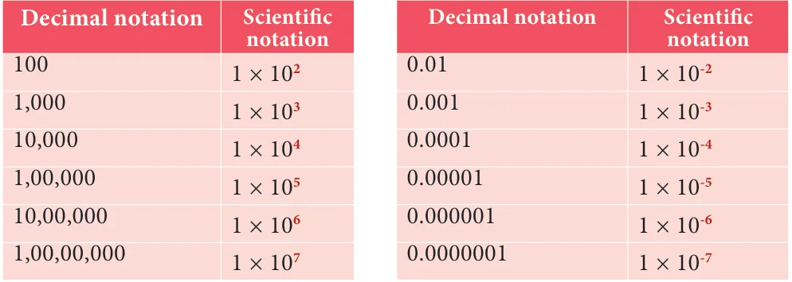

Suppose you are told that the diameter of the Sun is 13,92,000 km and that of the Earth is 12,740 km, it would seem to be a daunting task to compare them. In contrast, if 13,92,000 is written as \(1.392 \times 10^6\) and 12,740 as \(1.274 \times 10^4\), one will feel comfortable. This sort of representation is known as scientific notation.
Since \(\frac{1.392 \times 10^6}{1.274 \times 10^4} \simeq \frac{14}{13} \times 10^2 \simeq 108\).
You can imagine 108 Earths could line up across the face of the sun. Scientific notation is a way of representing numbers that are too large or too small, to be conveniently written in decimal form. It allows the numbers to be easily recorded and handled.
2.8.1 Writing a Decimal Number in Scientific Notation
Here are steps to help you to represent a number in scientific form:
- Move the decimal point so that there is only one non-zero digit to its left.
- Count the number of digits between the old and new decimal point. This gives 'n', the power of 10.
- If the decimal is shifted to the left, the exponent n is positive. If the decimal is shifted to the right, the exponent n is negative.
Expressing a number N in the form of \(N = a \times 10^n\) where \(1 \le a < 10\) and 'n' is an integer is called as Scientific Notation.
The following table of base 10 examples may make things clearer:

Let us look into few more examples.
Example 2.28
Express in scientific notation (i) 9768854 (ii) 0.04567891 (iii) 72006865.48
Solution
(i) \(9768854.0 = 9.768854 \times 10^6\)
The decimal point is to be moved six places to the left. Therefore \(n = 6\).
(ii) \(0.04567891 = 4.567891 \times 10^{-2}\)
The decimal point is to be moved two places to the right. Therefore \(n = -2\).
(iii) \(72006865.48 = 7.200686548 \times 10^7\)
The decimal point is to be moved seven places to the left. Therefore \(n = 7\).
2.8.2 Converting Scientific Notation to Decimal Form
The reverse process of converting a number in scientific notation to the decimal form is easily done when the following steps are followed:
- Write the decimal number.
- Move the decimal point by the number of places specified by the power of 10, to the right if positive, or to the left if negative. Add zeros if necessary.
- Rewrite the number in decimal form.
Example 2.29
Write the following numbers in decimal form:
(i) \(6.34 \times 10^4\) (ii) \(2.00367 \times 10^{-5}\)
Solution
(i)V \(6.34 \times 10^4\)
\(\Rightarrow 6.3400 = 63400\)
(ii) \(2.00367 \times 10^{-5}\)
\(000002.00367\)
\(= 0.0000200367\)
2.8.3 Arithmetic of Numbers in Scientific Notation
- If the indices in the scientific notation of two numbers are the same, addition (or subtraction) is easily performed.
Example 2.30
The mass of the Earth is \(5.97 \times 10^{24}\) kg and that of the Moon is \(0.073 \times 10^{24}\) kg. What is their total mass?
Solution
Total mass \(= 5.97 \times 10^{24}\) kg \(+ 0.073 \times 10^{24}\) kg
\(= (5.97 + 0.073) \times 10^{24}\) kg
\(= 6.043 \times 10^{24}\) kg
- The product or quotient of numbers in scientific notation can be easily done if we make use of the laws of radicals appropriately.
Example 2.31
Write the following in scientific notation :
(i) \((50000000)^4\) (ii) \((0.00000005)^3\)
(iii) \((300000)^3 \times (2000)^4\) (iv) \((4000000)^3 \div (0.00002)^4\)
Solution
(i) \((50000000)^4 = (5.0 \times 10^7)^4\)
\(= (5.0)^4 \times (10^7)^4\)
\(= 625.0 \times 10^{28}\)
\(= 6.25 \times 10^2 \times 10^{28}\)
\(= 6.25 \times 10^{30}\)
(ii) \((0.00000005)^3 = (5.0 \times 10^{-8})^3\)
\(= (5.0)^3 \times (10^{-8})^3\)
\(= (125.0) \times (10)^{-24}\)
\(= 1.25 \times 10^2 \times 10^{-24}\)
\(= 1.25 \times 10^{-22}\)
(iii) \((300000)^3 \times (2000)^4\)
\(= (3.0 \times 10^5)^3 \times (2.0 \times 10^3)^4\)
\(= (3.0)^3 \times (10^5)^3 \times (2.0)^4 \times (10^3)^4\)
\(= (27.0) \times (10^{15}) \times (16.0) \times (10^{12})\)
\(= (2.7 \times 10^1) \times (10^{15}) \times (1.6 \times 10^1) \times (10^{12})\)
\(= 2.7 \times 1.6 \times 10^1 \times 10^{15} \times 10^1 \times 10^{12}\)
\(= 4.32 \times 10^{1+15+1+12} = 4.32 \times 10^{29}\)
(iv) \((4000000)^3 \div (0.00002)^4\)
\(= (4.0 \times 10^6)^3 \div (2.0 \times 10^{-5})^4\)
\(= (4.0)^3 \times (10^6)^3 \div (2.0)^4 \times (10^{-5})^4\)
\(= \frac{64.0 \times 10^{18}}{16.0 \times 10^{-20}}\)
\(= 4 \times 10^{18} \times 10^{+20}\)
\(= 4.0 \times 10^{38}\)
Thinking Corner
- Write two numbers in scientific notation whose product is 2. 83104.
- Write two numbers in scientific notation whose quotient is 2. 83104.